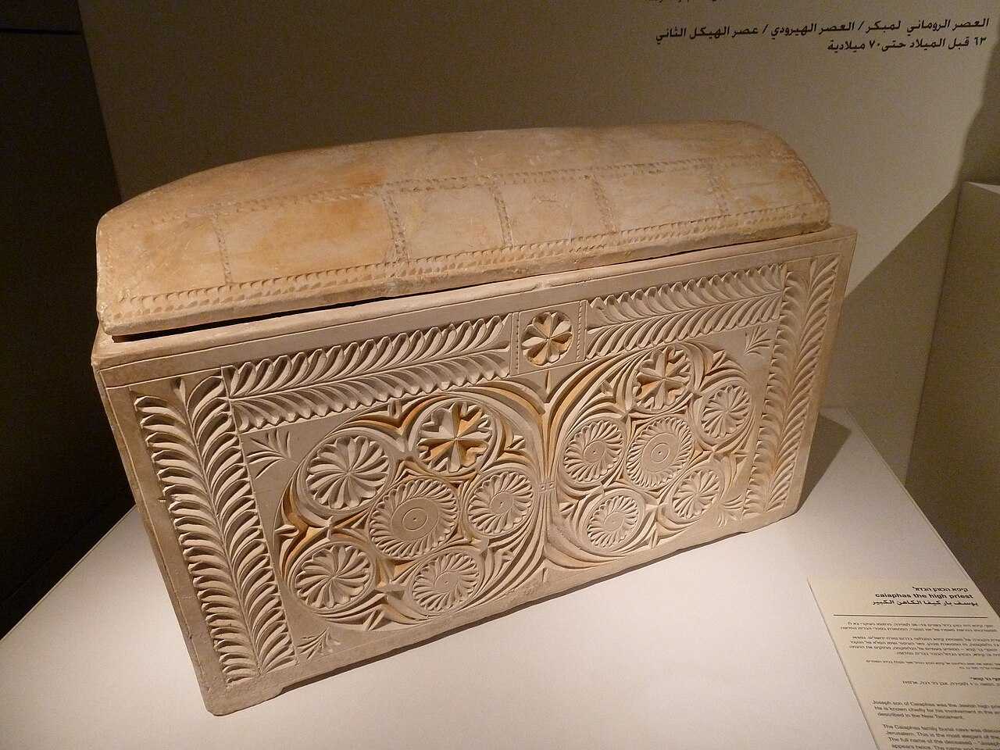

Caiaphas Ossuary

An ornately carved limestone ossuary (bone box) inscribed 'Joseph son of Caiaphas,' found in a family burial cave south of ancient Jerusalem. Inside were the bones of a man of about sixty, consistent with the high priest who presided at Jesus's trial.
Biblical Significance
The Gospels name Caiaphas as the high priest who plotted Jesus's death and questioned Him before the Sanhedrin. Finding his family's burial box confirms this named official and illuminates Second Temple burial customs that also frame Joseph of Arimathea's tomb.
Interpretations
Scholars broadly accept the ossuary as that of the high priest’s family (‘Joseph son of Caiaphas’), though a few note it was found in a salvage context rather than a controlled excavation.
Scripture Illuminated
Awaiting Review Not yet checked against scholarly sources. Treat its claims as provisional until this entry is reviewed. About verification
Last reviewed: not yet reviewed